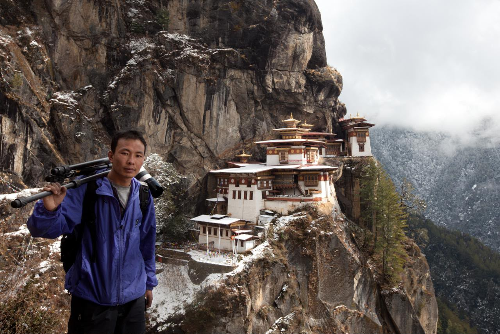
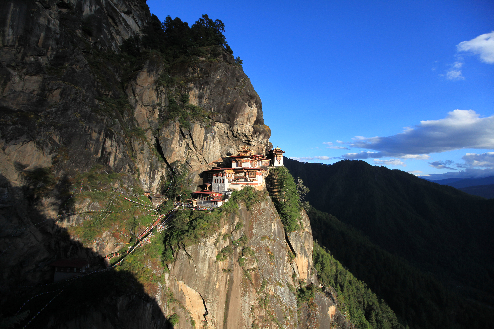
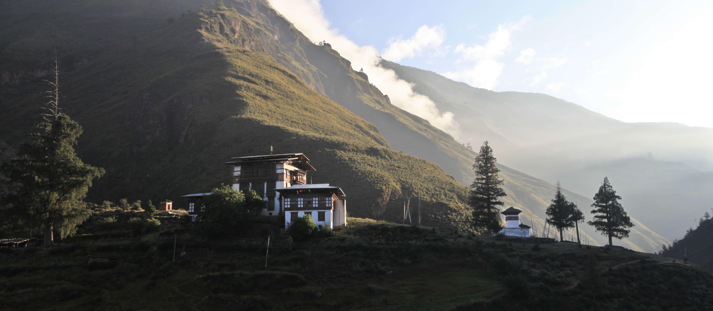

13 Days
Bhutan Through the Lens
This photography tour captures Bhutan's spring landscapes, festivals and everyday life, departing March to April.
© gomoadventures.com

TRAVEL BEYOND THE ORDINARY
We believe traveling to Bhutan is more than visiting a destination—it is about experiencing a living culture, connecting with its people, and creating memories that last a lifetime.
At Gomo Adventures, we believe in the right place, at the right time, and with the right people. Since 2008, we have welcomed travelers with genuine Bhutanese hospitality and created meaningful journeys that reveal the true spirit of our country. Founded by Punap Ugyen Wangchuk, a former monk turned professional guide and photographer, Gomo Adventures is built on a lifelong passion for sharing Bhutan. Since 1990, Punap has explored every corner of the country, bringing decades of guiding experience and deep local knowledge to every journey. Whether you seek culture, spirituality, trekking, nature, photography, or Bhutan’s hidden gems, we create personalized adventures that are authentic, thoughtful, and unforgettable.
Ugyen Wangchuk (Punap)
Founder & Lead Guide
Notes from the last Buddhist kingdom in the Himalayas — on dzongs, dances and valleys that keep their own time.

The last Buddhist kingdom in the Himalayas measures its progress in Gross National Happiness, not GDP. Development here is deliberate: high-value, low-impact tourism, forests that by law must cover 60% of the land, and a monarchy that answers to its people.
Every valley guards its own dialect, festival and protector deity — Bhutan was never one culture, but many, sealed for centuries behind the world’s highest peaks.

Bhutan opened to tourism only in 1974, later than any of its neighbours.
Even now, every visit is arranged through a licensed local operator — never independently.


Getting here is deliberately unhurried. A Sustainable Development Fee funds free healthcare and education for every Bhutanese, and keeps visitor numbers low enough that trails, temples and festivals never feel crowded.
Most journeys begin in Paro and end far east in Bumthang, each stop revealing another face of the kingdom — terraced rice valleys, blue-pine ridgelines, villages that still keep their own timing.

Nine journeys through Bhutan, grouped by what brings you here — the camera, the culture, or the mountains. Each is designed and led by Ugyen himself, in small numbers and at an unhurried pace. Any of them can be made private and built entirely around you.
13 Days
This photography tour captures Bhutan's spring landscapes, festivals and everyday life, departing March to April.

12 Days
This photography tour moves through Bhutan's golden valleys and crimson rice terraces, departing September to October.

18 Days
This spiritual and cultural odyssey crosses Bhutan's dzongs, monasteries and sacred valleys, departing April to August.

10 Days
This journey into Bhutan's living arts and crafts traditions is guided by local masters, departing year-round.

14 Days
This culinary journey moves through Bhutan's markets, farmhouses and family kitchens, departing August to September.

10 Days
This cultural celebration is built around Bhutan's most vivid masked-dance festivals, departing February to March.

11 Days
This journey through Bhutan's forests blends wild mushroom foraging with guided photography, departing 13–23 August.

12 Days
This adventure combines Himalayan trekking with Bhutan's rich cultural heritage, departing October, November, March or April.
Having the chance of exploring Bhutan with Gomo Adventures and Ugyen Wangchuk is basically like winning the lottery. I have been...
Read moreMr. Ugyen Wangchuk provides prompt, reliable and anticipatory services. He helped me plan and organize a few in-country travels...
Read moreGomo Adventures and its owner, Ugyen Wangchuk, came highly recommended by a colleague of mine with whom I worked while in...
Read moreGreat trip! I went on a photography tour with Gomo Adventures a few years back and had a great time. We visited...
Read more5 stars ***** Ugyen is an amazing guide. He is extremely friendly, helpful and funny. We had an amazing time in...
Read moreExploring Bhutan with Gomo Adventures. Gomo Adventures is a very reliable and experienced tour operator. I...
Read more